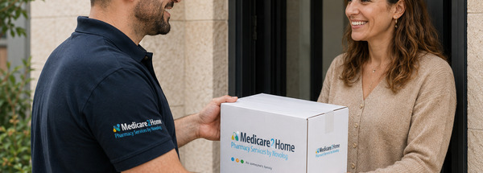

תיירות מרפא – הטיפול בישראל. הפתרון יכול להגיע מכל מקום בעולם.
מדיקר מלווה מטופלים המגיעים לישראל לקבלת טיפול רפואי ואת הגורמים המלווים אותם – מאיתור התרופות והצעת המחיר, דרך אספקה במהלך הטיפול והאשפוז, ועד התרופות הנדרשות להמשך הטיפול לאחר החזרה למדינת המוצא.

כתובת אחת לצורכי התרופות של המטופל בישראל
השירות מיועד למטופלים ולגורמים מקצועיים המלווים אותם, ומאפשר לרכז את הטיפול התרופתי מול מדיקר במקום לחפש פתרון נקודתי בכל שלב.
מטופלים מחו״ל
מטופלים המגיעים לישראל לניתוח, טיפול אונקולוגי, טיפול מתמשך או טיפול רפואי אחר וזקוקים לתרופות במהלך שהותם.
סוכנויות תיירות מרפא
כתובת מקצועית לטיפול בבקשות תרופה, בדיקת זמינות, הצעת מחיר, אספקה וייעוץ רוקחי למטופלי הסוכנות.
בתי חולים ומרכזים רפואיים
מענה לצורכי תרופות של מטופלים בינלאומיים, לרבות מקרים שבהם התרופה אינה זמינה בישראל.
גורמים בינלאומיים
שירות לגורמים מקצועיים המלווים מטופלים זרים בישראל. פירוט סוגי הגופים – לאישור מדיקר
מדיקר יכולה לחפש אותה בעולם
למדיקר רשת ספקים בינלאומית רחבה בארה״ב, אירופה, אוסטרליה ושווקים נוספים. כאשר התרופה הנדרשת אינה זמינה בישראל, מדיקר בוחנת אפשרויות איתור ורכש בחו״ל ופועלת ליבואה לישראל בהתאם למסלול ולדרישות הרלוונטיות.
כך סוכן תיירות המרפא או המטופל אינם נדרשים להתחיל בחיפוש עצמאי במדינות שונות – מדיקר מרכזת את הבדיקה והטיפול בבקשה.

מהמרשם ועד התרופה
תהליך פשוט וברור לסוכן, למטופל או לגורם המלווה.
שולחים מרשם ובקשה
פרטי התרופה, מינון, כמות ופרטי המטופל.
בדיקת זמינות ואיתור
מדיקר בודקת זמינות בישראל ובמידת הצורך גם באמצעות ספקים בחו״ל.
הצעת מחיר ותשלום
לאחר הבדיקה נשלחת הצעת מחיר. עם אישורה והסדרת התשלום מטפלים בהזמנה.
אספקה מתואמת
התרופה נשלחת לבית המלון, לבית החולים, למרכז הרפואי או לסוכנות תיירות המרפא.
ליווי לאורך כל מסע הטיפול בישראל
המעטפת אינה מסתיימת עם השחרור מבית החולים.
לפני ההגעה
ניתן להעביר מראש מרשם ובקשה כדי להתחיל בבדיקת התרופות הנדרשות.
במהלך האשפוז
תיאום ואספקת תרופות בהתאם לצורך ולמקום הטיפול.
לאחר השחרור
המשך אספקה לבית המלון או למקום השהייה של המטופל.
לקראת החזרה הביתה
אספקת התרופות הנדרשות להמשך הטיפול לאחר עזיבת ישראל, בהתאם למרשם ולבקשה.
מערך שירות לקוחות וצוות רוקחים בשלוש שפות
סוכן תיירות מרפא, מטופל או גורם מקצועי יכולים לפנות למדיקר ולקבל שירות וייעוץ רוקחי בעברית, אנגלית ורוסית.
עברית
שירות וייעוץ רוקחי.
English
Customer service and pharmacist support.
Русский
Обслуживание и фармацевтическая поддержка.
שאלות נפוצות
אפשר לשלוח בקשה עוד לפני שהמטופל מגיע לישראל?
כן. ניתן להעביר מרשם ופרטי תרופה מראש כדי להתחיל בבדיקת הזמינות והאפשרויות.
מה קורה אם התרופה אינה זמינה בישראל?
מדיקר יכולה לבדוק אפשרויות איתור באמצעות רשת ספקים בינלאומית ולבחון יבוא לישראל בהתאם לדרישות הרלוונטיות.
לאן ניתן לשלוח את התרופה?
בהתאם לתיאום, ניתן לספק לבית מלון, בית חולים, מרכז רפואי או סוכנות תיירות המרפא.
האם ניתן לקבל ייעוץ רוקחי?
כן. צוות הרוקחים מעניק ייעוץ וליווי רוקחי למי שפונה, בעברית, אנגלית ורוסית.